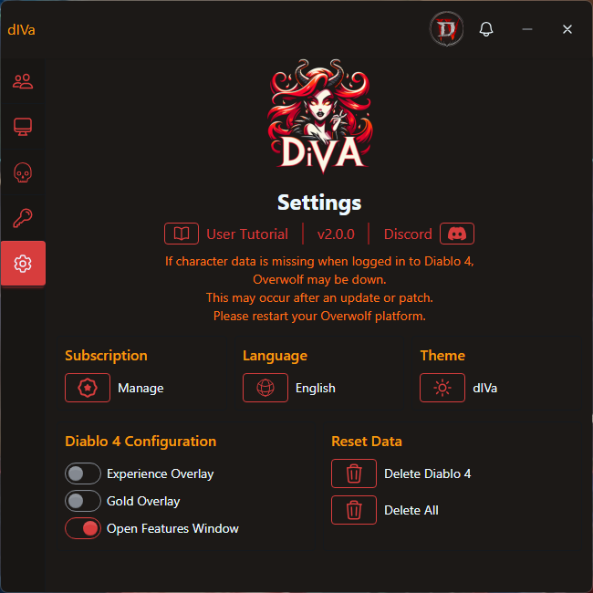

Settings
Screenshot of the Settings window.
Functionality
The settings screen dynamically adjusts based on the game you are logged into. Here’s a breakdown of the functionality for managing settings across different games like Diablo II or Diablo IV:
-
User Tutorial:
Click the tutorial link to access this step-by-step guide on how to use the dIVa application and its features.
-
Version:
The current version of the application is displayed here, ensuring you're using the most up-to-date features and improvements
-
Game Configuration:
- Overlay Options: Depending on the game, you will see options such as Gold Overlay or Experience Overlay or other relevant configuration options for the logged-in game.
-
Reset Data:
- Reset Game Data: Clear accumulated data relevant to the game you're currently using (e.g., resetting gold, experience, or other game-specific data).
- Delete Game Data: Completely remove stored data for the current game.
- Delete All: Reset all stored data across the application, affecting all games.
-
Manage Subscription:
Access your subscription options and manage your plan or billing details through our trusted partner, Tebex.
-
Language:
Select your preferred language from the available options.
- English
- Deutsch
- 한국어
- Español
- Português
Themes
Customize your dIVa experience with game-specific themes that match your favorite aRPG:
- Dynamic Theme Switching: Themes automatically adjust based on your active game, or manually select your preferred theme in the settings below
-
Game-Specific Themes: Each supported game now has its own unique theme, bringing the perfect ambiance to your
analytics:
-
dIVa: The default theme, fiery orange and red darkness
- Active for Diablo II: Resurrected
-
Vessel of Hatred: Embrace the new jungle green aesthetics with our Diablo IV expansion theme
- Active for Diablo IV
-
Path of Exile: Experience the gritty midnight blue atmosphere of Wraeclast
- Active for Path of Exile 2
-
dIVa: The default theme, fiery orange and red darkness
- Enhanced Visuals: Revamped UI elements, icons, and color schemes to match each game's unique aesthetic
Vessel of Hatred Theme
Diablo IV's dark and brooding aesthetic

Path of Exile Theme
Wraeclast's gritty and atmospheric style